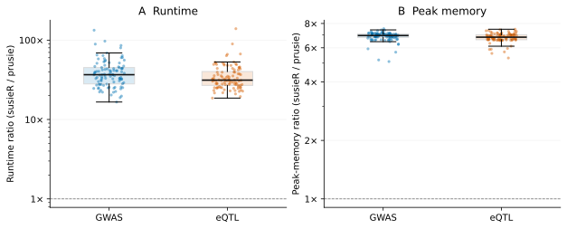

On this page
prusie
prusie fits the SuSiE model to association summary statistics and signed linkage disequilibrium (LD). A Python API connects to Rust computation and returns variant posterior inclusion probabilities (PIPs), credible sets and posterior effect summaries.
| Analysis | Maximum absolute PIP difference | Paired runtime speedup¹ | Median peak-memory ratio² |
|---|---|---|---|
| GWAS | 9.14e-09 | 37.4× | 6.94× |
| eQTL | 1.22e-08 | 33.6× | 6.8× |
100 GWAS locus analyses and 100 eQTL analyses, each with 103–4162 variants, compared with susieR 0.16.6. ¹ Geometric mean of per-case ratios of median runtimes (susieR/prusie). ² Median per-case ratio of full-process peak memory (susieR/prusie). Results reanalyze measurements of prusie 0.2.3rc4 made on 6 October 2026; inference code is unchanged.

See numerical accuracy and performance for the data, absolute times, methods and measurement environment.
Installation
Install from source with Python ≥3.10, the Rust toolchain in
rust-toolchain.toml, a C linker and Python development headers:
git clone https://github.com/LucaJiang/prusie.git
cd prusie
python -m venv .venv
. .venv/bin/activate
python -m pip install .
NumPy is the only Python runtime dependency. Fitting requires neither R nor Rust after installation. See installation for build details and the environments tested.
Quick start
The installed package includes an independent 500-variant synthetic toy example. Run this from any directory, offline:
import numpy as np
import prusie
example = prusie.load_example()
fit = prusie.susie_rss(**example["inputs"], **example["parameters"])
print("Converged:", fit.converged, "Iterations:", fit.niter)
lead = int(np.argmax(fit.pip))
print(f"{fit.variant_ids[lead]}: PIP={fit.pip[lead]:.3f}")
for k, component in enumerate(fit.sets["cs_index"]):
print(int(component), fit.variant_ids[fit.sets["cs"][k]].tolist(),
"Posterior mass:", float(fit.sets["coverage"][k]))
A PIP summarizes variant inclusion across effects; each credible set belongs to an original SuSiE component. The toy example tutorial explains input preparation, convergence, posterior mass, purity and saving results.
Documentation
Browse the documentation site, statistical model, API, implementation and model support. Reproducibility provides separate entrances for regenerating tables/figures and rerunning fits from inputs.
Citation and license
Cite SuSiE, Wang et al. (2020) and SuSiE-RSS, Zou et al. (2022), and identify prusie 0.2.3rc6 using CITATION.cff. Author and maintainer: Wenxin Jiang.
GPL-3.0-or-later. LICENSE and third-party notices retain upstream code and data attribution.